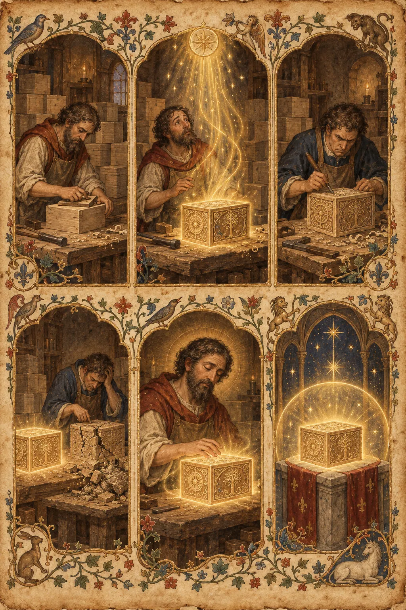

I. La Explicación Lógica
Una marca es un nombre, un signo o una identidad que distingue los bienes de un vendedor de los de otro. Es un activo intangible. Las empresas invierten en ella a través de la publicidad, el diseño, el embalaje y la experiencia del cliente, y esta devuelve valor en forma de capital de marca — la prima que los clientes pagarán por un producto con la marca asociada por encima de un producto idéntico sin ella.
Existe una maquinaria bien desarrollada para describir esto. Posicionamiento: la marca ocupa un lugar distinto en la mente del cliente, establecido frente a los competidores (Ries y Trout). Diferenciación: la marca da a los clientes una razón para elegirla por encima de alternativas funcionalmente idénticas. Teoría de la señalización (Spence): la marca comunica información de calidad que el cliente no puede verificar directamente — el logotipo es una señal creíble porque la empresa ha invertido en él. Fosos económicos (Buffett): una marca es un foso que protege los márgenes de la competencia, porque los competidores pueden copiar las características pero no pueden copiar fácilmente la confianza y la conciencia acumuladas que la marca posee. Los costes de cambio y los efectos de red refuerzan el foso. Bienes de Veblen: algunas marcas venden el estatus en sí mismo, y la demanda aumenta con el precio. Valor del ciclo de vida del cliente: la marca convierte a los compradores de una sola vez en compradores recurrentes.
El modelo lógico es completo y mayormente correcto. Una marca es un activo que permite a una empresa cobrar más que el coste más el margen durante mucho tiempo, porque la competencia no puede replicar lo que la empresa ha acumulado en la cabeza de la gente.
Esa explicación es limpia, correcta y completamente hueca. Describe la maquinaria del significado sin tocar ni una sola vez el significado. Es la explicación de alguien que ha leído todos los libros sobre branding y nunca ha sentido una marca — nunca ha hecho cola al amanecer, nunca ha sentido el pequeño orgullo de una caja con el nombre correcto, nunca ha discutido con un amigo sobre una empresa como si la empresa fuera una persona. La explicación lógica trata la marca como algo que la empresa posee. La verdad sentida es que la empresa solo la toma prestada.
II. La Explicación Sentida
Toda civilización humana que ha lidiado con los objetos y su significado ha legado el mismo descubrimiento: el poder de un objeto no tiene casi nada que ver con el objeto. Una vez que sientes esto, nunca puedes volver a mirar un producto, un precio o un competidor de la misma manera — porque por fin ves lo que realmente se está vendiendo.
La reliquia. En la tradición cristiana de las reliquias, una astilla del hueso de un santo descansa en un relicario de oro y atrae a peregrinos de todos los continentes. Químicamente, es indistinguible del hueso de un mendigo desconocido en el mismo cementerio. Nadie cruzaría la calle por el hueso del mendigo. La diferencia entre los dos objetos no es material — es enteramente historia. La reliquia es la demostración más pura jamás concebida de lo que es una marca: un objeto cuyo valor íntegro reside en el significado que se le atribuye, de tal manera que la cosa física se vuelve casi incidental. Cualquiera puede suministrar huesos. Nadie puede suministrar ese hueso. Ese es el foso. Se construyó una catedral en torno a una diferencia que no existe en ninguna parte del mundo físico — y funcionó. Esta es la primera y más antigua lección: el significado no es una capa superpuesta al objeto. El significado es el objeto, para todo propósito humano que importa.
El anillo Kula. En las Islas Trobriand, Malinowski documentó una circulación de objetos que no tenían ninguna utilidad — brazaletes de concha y collares que pasaban de isla en isla, de mano en mano, sin ser nunca conservados, ni usados funcionalmente, ni intercambiados por bienes. El valor de un objeto Kula residía en su viaje: por qué nombres había pasado, qué historias portaba, cuán lejos había viajado. El objeto era la excusa para la relación. Esta es la segunda lección más antigua, y es la anatomía exacta de Red Bull y Starbucks: el producto es el brazalete, y la marca es el anillo — la relación que el objeto representa. El café es la excusa para el tercer lugar. La lata es la excusa para la adrenalina. La gente paga por el anillo, y el brazalete viene con la transacción.
El potlatch. Los Kwakwaka'wakw del noroeste del Pacífico construyeron toda su economía de estatus sobre el acto de regalar cosas. En el potlatch, la grandeza de un jefe se medía por lo que destruía y distribuía — mantas quemadas, cobres rotos, riquezas entregadas a los rivales. Cuanto más dabas, más eras. El hombre que acaparaba no era nada. Esto invierte todo instinto contable y es la verdadera estructura de las marcas más fuertes: Red Bull no vende una bebida, regala alas — patrocina el salto, es dueña del equipo, paga por el momento del vuelo — y el dar ES la marca. La lata es solo la contabilidad del don. Cuando una marca entiende que su producto es el recibo de un regalo en lugar del regalo en sí, el foso se hace visible: los competidores pueden clonar el recibo. No pueden clonar el don.
El tótem. Durkheim, al estudiar los clanes australianos, vio que el tótem — el animal o emblema que daba nombre al clan — no era el animal. Era la bandera de la que pendía la identidad del clan. Cuando el clan se reunía en torno al tótem, no adoraban a un pájaro; se congregaban en torno a sí mismos, proyectados hacia el exterior. Esto es lo que sucede en un lanzamiento de Apple o en una cola frente a una tienda de Supreme. El logotipo es un tótem. La gente no está mirando a una empresa — está mirando un espejo con un logotipo, y lo que ven reflejado es el yo en el que se están convirtiendo. La marca que entiende esto deja de intentar describir su producto y empieza a construir el espejo. La marca que no lo entiende sigue enumerando especificaciones y se pregunta por qué las especificaciones nunca conmueven a nadie.
El Me. Los sumerios creían que la civilización funcionaba gracias al me — esencias divinas que no son reglas, sino la veta invisible de cómo deben ser las cosas. No puedes señalar la veta; solo puedes sentir cuando algo va en su contra. Toda marca real tiene un me. Es por eso que un lanzamiento de Supreme se siente inevitable y una imitación se siente equivocada incluso cuando la imitación es indistinguible; por qué un Starbucks en Tokio y un Starbucks en Bogotá se sienten como el mismo lugar; por qué un producto que "encaja con la marca" tiene éxito y uno que no se siente como una traición. El me es la parte de la marca que no se puede plasmar en un informe, y es exactamente la parte que los competidores no pueden copiar. Pueden copiar el logotipo, los colores, el embalaje. No pueden copiar la veta.
Cynefin. La palabra galesa cynefin nombra el lugar donde tu naturaleza se siente en casa — no una ubicación, una pertenencia. Es la palabra para la sensación por la que Starbucks cobra seis dólares. El café es una mercancía; el tercer lugar es un cynefin cuya entrada puedes comprar. El barista escribe tu nombre en el vaso, y el nombre es la puerta: un lugar que sabe tu nombre es un hogar, y un hogar vale seis dólares, y la bebida es lo que sostienes mientras te sientas dentro de esa pertenencia. El producto más profundo de la marca nunca es la cosa en la bolsa. Es el hogar al que la cosa te permite entrar.
Chen y lo numinoso. El chen hebreo es la gracia que alguien porta sin esfuerzo — y todos pueden sentirla, y nadie puede fabricarla esforzándose más. Lo numinoso latino es la presencia que precede al nombre — la atmósfera que llega antes de la explicación. Las mejores marcas tienen chen: la sensación de corrección que no puede ser deconstruida por ingeniería inversa, el carácter que se emana en lugar de interpretarse. Por eso la imitación de una marca siempre fracasa en el punto exacto en que debería tener éxito: la copia tiene el nombre, los colores, el diseño — y no tiene la gracia. Puedes poner una corona en cualquier reloj. No puedes poner la corona en la sensación.
Mono no aware. La sensibilidad japonesa del mono no aware es el patetismo agridulce de las cosas porque no durarán. Es el motor de las ediciones limitadas, las series cortas, la colaboración que nunca se repondrá, el ladrillo que nunca volverá a fabricarse. Lo coleccionable es hermoso porque es impermanente — la flor de cerezo que cae es lo más valioso del jardín precisamente porque cae. El ladrillo de Supreme no es un ladrillo; es una flor de cerezo. La escasez no es una táctica de marketing superpuesta al producto; es el peso sentido de la mortalidad del producto, y la marca que sabe esto vende la caída, no la flor.
Ìwà. La palabra yoruba ìwà es el carácter como algo que emanas, no algo que posees. Es lo mismo para una marca. Una marca no es una cosa que una empresa tiene; es un carácter que una empresa emana, y la gente lo siente en cada interacción — el empleado, el paquete, el reembolso, el silencio después de un error. Por eso una marca puede sobrevivir a un mal producto pero rara vez sobrevive a un mal carácter, y por qué un solo momento auténtico puede generar más ingresos que un año de publicidad: la gente no realiza transacciones con activos, se relaciona con caracteres.
Ayni. El ayni quechua es la reciprocidad sagrada — no una transacción, no un regalo, sino un equilibrio vivo entre tú y todo lo demás. El cliente que compra una vez ha realizado una transacción. El cliente que defiende la marca en una discusión, que acampa durante la noche, que se tatúa el logotipo, que corrige la opinión equivocada de un extraño sobre la empresa — ese cliente está en ayni con la marca. La marca le dio identidad, pertenencia, una historia; él le devuelve defensa, lealtad, evangelización. El equilibrio debe mantenerse: rompe la reciprocidad y la relación se rompe, más rápido de lo que cualquier competidor podría romperla. Esto es lo que realmente significa «la gente no compra una marca, invierte en ella». Una compra termina en la caja registradora. Una inversión sigue pagando — y sigue recibiendo pagos. La marca es la única inversión que paga dividendos en identidad, y por eso la gente la trata como tal.
Y aquí está la ley que une todo esto, la que la explicación lógica nunca ve: la marca no necesita tratar sobre lo que la empresa vende. Necesita una relación con ello — y la relación es el foso. Rolex vende relojes, pero la marca es estatus — tu teléfono da la hora mejor, y todo el mundo lo sabe, y ese es precisamente el punto; el reloj es la coartada para la frase que dice sin palabras. Red Bull vende una bebida, pero la marca es adrenalina e identidad — por eso es dueña de escuderías de Fórmula 1 en lugar de hablar de ingredientes; la bebida es la entrada a la tribu. Starbucks vende café, pero la marca es el tercer lugar — la bebida es el alquiler que pagas para sentarte dentro de la pertenencia. Apple vende tecnología, pero la marca es simplicidad y pertenencia — la tienda es una galería de arte, no una tienda de electrónica; el dispositivo es el vehículo para la sensación. El producto puede ser clonado por cualquiera que tenga una fábrica. La relación no puede ser clonada por nadie en absoluto — porque la relación vive en las personas, no en el producto. Ese es el foso. Por eso el mejor producto no siempre gana: el producto es la flecha, la marca es el arco, y el arco es lo que decide cuán lejos vuela la flecha.
Una marca no es lo que vendes. Es lo que la cosa que vendes significa — y el significado, una vez sentido, es la única fortaleza que jamás ha sido tomada por una copia más barata.
III. Las Pruebas
Estas no son preguntas sobre branding. Son situaciones que revelan si lo sientes.
Prueba 1 — La Falsificación
Un hombre compra un Rolex falsificado a un vendedor en un mercado. Es indistinguible del auténtico — mismo peso, mismo movimiento, misma tapa trasera, da la hora perfectamente. Él sabe que es falso; nadie más puede notarlo. Lo lleva durante un año y funciona sin fallos. ¿Por qué todavía se siente diferente en su muñeca? ¿Qué le falta, exactamente, a la falsificación?
Respuesta hueca: «La falsificación carece de autenticidad, procedencia y la garantía de calidad de la marca. El portador experimenta disonancia cognitiva y una señalización de estatus reducida, ya que la falsificación no puede transmitir riqueza genuina a observadores conocedores».
Por qué es hueca: Es un informe forense. Nombra el certificado que falta, no el significado ausente. Asume que la diferencia radica en lo que otros pueden verificar, cuando el hombre conoce la diferencia incluso solo en una habitación a oscuras. Trata el reloj como un dispositivo de señalización y no ve que el hombre no está señalizando — está hablando.
Respuesta sentida: «La falsificación es un disfraz; el auténtico es una frase. El reloj nunca trató de dar la hora — tu teléfono da la hora mejor. Trataba de decir algo sin abrir la boca, de portar una historia que no te ganaste pero que elegiste. La falsificación tiene las letras pero no el lenguaje: cuando la mira, no le responde nada. No es que a la falsificación le falte autenticidad — es que le falta un yo. Él lleva uno auténtico para sentirse como el hombre que lo posee. La falsificación solo le recuerda al hombre que no pudo».
Prueba 2 — El Ladrillo
Supreme vendió un ladrillo literal — un ladrillo de arcilla para mampostería con la palabra «Supreme» grabada — por treinta dólares. Se agotó. Explícale a alguien que solo ve arcilla qué se vendió en realidad.
Respuesta hueca: «Supreme vendió escasez y estatus a través de un artículo de novedad de edición limitada. El valor del ladrillo se deriva del capital de marca, la cultura del hype y la dinámica del mercado de reventa, siendo el propio absurdo lo que genera capital cultural y publicidad gratuita».
Por qué es hueca: Es una autopsia escrita por un analista que nunca ha poseído uno. Explica la mecánica del hype sin explicar ni una sola vez el momento — lo que la persona sintió en la caja, lo que sostuvo, en lo que se convirtió. Nombra la máquina y pasa por alto el sacramento.
Respuesta sentida: «No estaban pagando por un ladrillo. Estaban pagando por la historia de poseer algo absurdo que casi nadie más tenía — por el derecho a ser la persona que es dueña de la broma. El ladrillo es una contraseña: abre la puerta a la tribu de gente que lo entiende, y la puerta es el producto. Treinta dólares es el precio de entrada a un pequeño cielo temporal donde eres el tipo de persona que compra un ladrillo con una palabra y la palabra es tuya. El estatus vence a la utilidad — no porque el estatus sea irracional, sino porque la utilidad es la parte del objeto que muere, y el estatus es la parte que vive. La arcilla nunca fue el producto. La membresía lo fue».
Prueba 3 — El Clon Perfecto
Una empresa clona un producto de éxito arrollador. El clon es mediblemente mejor — más características, mejores materiales, menor precio. Fracasa de todos modos. La empresa original no cambió su producto, no bajó su precio, ni siquiera lanzó una campaña de defensa. ¿Por qué fracasó el clon?
Respuesta hueca: «El clon fracasó debido a la lealtad a la marca y los costes de cambio. Los clientes existentes se enfrentan a barreras psicológicas y prácticas para cambiar, y el capital de marca del titular proporciona una ventaja de confianza que la superioridad funcional no puede superar sin una inversión significativa en marketing».
Por qué es hueca: Es un gráfico con flechas. Trata al cliente como un nodo en un modelo de abandono y a la marca como un coeficiente de fricción. No puede explicar la parte que realmente sucedió: el clon era mejor, y la gente aun así sentía que el clon estaba mal — y «mal» no es un coste de cambio.
Respuesta sentida: «El clon copió el producto y no copió aquello que el producto representaba — así que el clon era un producto sin nada detrás, y la gente puede sentir eso de la misma manera que sientes una habitación que está amueblada pero vacía. El original nunca fueron las características. Fue la promesa, la tribu, la historia, el lugar. El clon era mejor en todo lo que hacía el original y no tenía idea de para qué servía el original. Un ladrillo mejor sigue siendo un ladrillo. Lo que no se puede clonar no es el producto — es el significado, y el significado no es una característica que puedas añadir. El clon no perdió ante una oferta mejor. Perdió ante un fantasma: se paró junto a la cosa que la gente ama y era solo una cosa».
Prueba 4 — El Imperio Adyacente
Red Bull es propietaria de dos escuderías de Fórmula 1, patrocina vuelos con traje de alas sobre fiordos y ha pasado décadas filmando a gente haciendo cosas que deberían matarlos. Su publicidad casi nunca menciona los ingredientes de su bebida. Starbucks cobra seis dólares por un café que podrías hacer en casa por céntimos, y escribe tu nombre en el vaso. Ninguna de las dos empresas habla de su producto como lo haría una persona de producto. ¿Por qué funciona la adyacencia? ¿Por qué la marca que parece más alejada de su producto suele tener el foso más profundo?
Respuesta hueca: «Estas marcas utilizan el marketing de estilo de vida y la asociación de marca para alinear sus productos con identidades aspiracionales. Al asociar el producto con deportes extremos o comunidad, aumentan el compromiso emocional y el valor percibido, creando diferenciación en categorías mercantilizadas».
Por qué es hueca: Describe la estrategia como un revestimiento aplicado al producto. Asume que el producto es el centro y el estilo de vida es la decoración. No puede ver que el centro y la decoración están invertidos — la bebida es la decoración, la adrenalina es el centro — y es precisamente esa inversión lo que crea el foso.
Respuesta sentida: «El producto es la excusa; la marca es la cosa en sí. Red Bull no vende una bebida — la bebida es el recibo de la adrenalina, la ambición y la identidad. El traje de alas no es un anuncio para la lata; la lata es un recuerdo del vuelo. Cuando la marca es dueña del equipo de F1, no está patrocinando el deporte — está siendo el deporte, y la lata es solo lo que sostienes mientras perteneces a él. Starbucks es lo mismo: el café es el alquiler, el nombre en el vaso es el título de propiedad, el tercer lugar es la propiedad. La adyacencia funciona porque la gente no compra productos — compra aquello en lo que los productos le permiten convertirse, y la marca que llega más lejos del estante llega más profundo en la persona. El foso no está alrededor del producto. El foso está alrededor del yo que el producto les permite habitar — y nadie puede copiar eso, porque no es algo que la empresa fabrica. Es algo que el cliente construye, con la marca como arquitecto».
Prueba 5 — El Tatuaje
Un cliente se tatúa el logotipo de la empresa en el cuerpo. Un economista lo llama irracional — el cliente pagó por convertirse en publicidad. El cliente lo llama lealtad. ¿Qué están haciendo en realidad?
Respuesta hueca: «El cliente ha formado una fuerte identidad de comunidad de marca, internalizando la marca como parte de su autoconcepto. Esto demuestra una lealtad de marca extrema y una fusión de identidad, que la empresa aprovecha a través de estrategias de construcción de comunidad».
Por qué es hueca: Es un estudio de caso desangrado. Nombra el fenómeno y lo observa desde la seguridad de una diapositiva de conferencia. No puede sentir lo que hay en la piel — que es el punto central de la prueba.
Respuesta sentida: «Invirtieron. No compraron — invirtieron. La marca les dio identidad, pertenencia, una historia en la que situarse, y ellos le devolvieron el favor a la marca en la única moneda que una persona realmente posee: su propio cuerpo, su propia narrativa. Es ayni — reciprocidad sagrada. El logotipo no es publicidad en su piel; es un título de propiedad. Dice: esta marca ahora es en parte mía, y no se ataca lo que es en parte mío. Por eso los defensores más feroces de una marca nunca son pagados por la marca — se están defendiendo a sí mismos. No defiendes una compra. Te defiendes a ti mismo. Y esto es lo que realmente significa «la gente invierte en marcas»: la marca se convierte en copropiedad de las personas que la portan, y la empresa que olvida esto — que trata a sus clientes como compradores en lugar de accionistas de significado — se despierta un día y descubre que el foso ha sido drenado desde dentro».
Prueba 6 — La Reliquia Familiar
Una empresa ha fabricado el mismo producto, esencialmente sin cambios, durante más de un siglo. Durante ese tiempo, docenas de competidores han lanzado versiones que son objetivamente superiores en formas medibles — más fuertes, más rápidas, más baratas, con más características. Ninguno de ellos lo ha desplazado. ¿De qué está hecho el foso?
Respuesta hueca: «El titular se beneficia de la herencia, la confianza y el capital de marca acumulado a lo largo de generaciones. Su larga historia funciona como una señal de credibilidad, y los costes de cambio más la formación de hábitos retienen a los clientes que valoran la tradición y la consistencia».
Por qué es hueca: Dice «herencia» y cree que ha dicho algo. Trata un siglo de significado como un activo de marketing — una reserva — cuando en realidad es algo vivo que se acumula como sedimento, una generación a la vez, en manos de personas que recibieron el producto de personas que lo recibieron de personas que lo recibieron. La respuesta hueca no puede sentir el traspaso.
Respuesta sentida: «El foso está hecho de traspasos. Cien años del mismo producto significan cien años del mismo momento: alguien entregando la cosa a alguien que ama, diciendo esto fue mío y ahora es tuyo. Cada traspaso añade una capa de significado que ninguna fábrica puede añadir — el producto no está sin cambios, está cargado. Los competidores construyeron mejores productos y luego tuvieron que competir con un recipiente que porta un siglo de confianza, memoria y pertenencia — y no se puede superar en especificaciones a un recipiente. El producto es el mismo, y esa mismidad es la clave: en un mundo donde todo cambia, es la cosa que no cambió, el objeto que estuvo ahí para tu padre y estará ahí para tu hijo. El foso no está hecho de calidad o características o incluso lealtad. Está hecho de significado acumulado — y el significado, una vez acumulado, es el único activo que se capitaliza para siempre y nunca puede ser copiado».
IV. El Modo de Fracaso
Las respuestas huecas sobre la marca comparten un único rasgo delator: hablan el vocabulario de la industria. Dicen capital, posicionamiento, diferenciación, lealtad, costes de cambio, valor percibido, señalización, comunidad, compromiso, valor del ciclo de vida — cada palabra correcta, cada palabra ajena a la cosa en sí. Describen la marca como un mapa describe una montaña: con precisión en cada punto, y la montaña no está ahí.
Las respuestas sentidas señalan. Dicen: el ladrillo es una contraseña. El reloj es una frase. El vaso es un nombre en una puerta. El tatuaje es un título de propiedad. La reliquia familiar es un traspaso. No explican la marca; muestran para qué sirve, de la misma manera que le mostrarías a un ciego para qué sirve el agua — no describiéndola, sino dándole algo que sostener mientras le dices lo que lleva dentro.
Las respuestas huecas también tratan la marca como algo que la empresa hace a la gente — una estrategia ejecutada sobre un mercado. Las respuestas sentidas saben que la marca es algo que la gente hace con la empresa — una coautoría, una inversión, una reciprocidad. La empresa que cree que es dueña de su marca es como un rey que cree que es dueño de la lealtad de su pueblo: cierto solo hasta el momento en que deja de serlo, y el foso nunca estuvo en la piedra — estuvo en los corazones, y los corazones no necesitan tu permiso para moverse.
El modo de fallo siempre tiene la misma forma: la respuesta hueca es correcta y la respuesta sentida es verdadera. Lo correcto se puede verificar. La verdad tiene que sentirse — y toda la diferencia entre un producto y una marca es que un producto se puede verificar, y una marca solo se puede sentir.
La prueba es siempre: ¿entiende la respuesta lo que el producto significa, o solo explica lo que el producto hace?